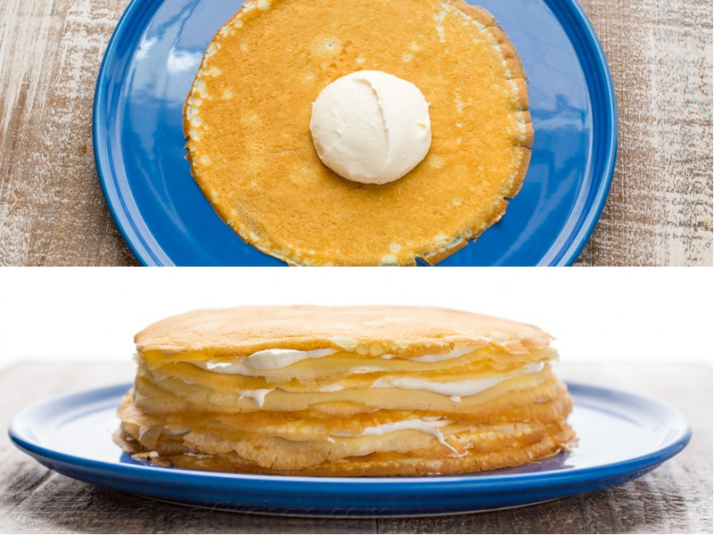
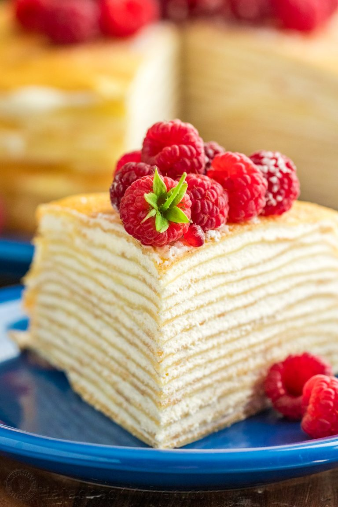

1. Place first crepe layer onto serving platter and spread about 3 Tbsp or 1 ice cream scoop of frosting between each crepe layer, totaling 15 layers of crepes and 15 layers of cream.
2. Refrigerate cake for at least 6 hrs or until frosting has firmed up (can be made 2 days ahead) - it will be much easier to slice after refrigeration and won't slide apart. To serve, dust with powdered sugar if desired and top with fresh berries.
